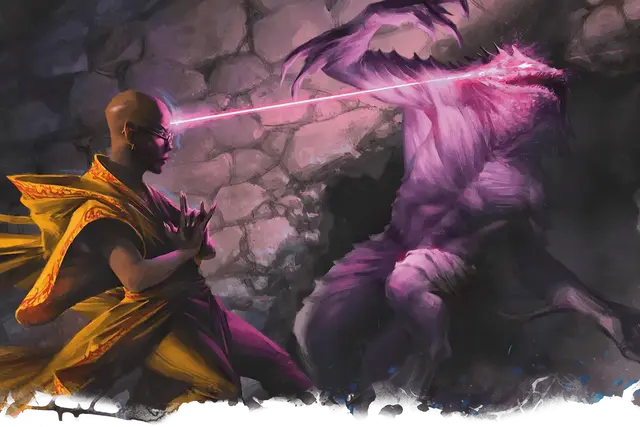

Расщепление разума
Mind Sliver
Заговор, Очарование

Время сотворения 1 действие
Дистанция 60 футов
Компоненты В
Длительность 1 раунд
Классы Волшебник, Колдун, Чародей
Подклассы аберрантный разум (чародей)
Вы отправляете дезориентирующий луч психической энергии в разум одного существа, которое видите в пределах дистанции. Цель должна преуспеть в спасброске Интеллекта, иначе получит 1к6 урона психической энергией и вычтет 1к4 из следующего спасброска, совершаемого ею до конца вашего следующего хода.
Урон этого заклинания увеличивается на 1к6, когда вы достигаете следующих уровней: 5-го уровня (2к6), 11-го уровня (3к6) и 17-го уровня (4к6).